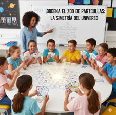
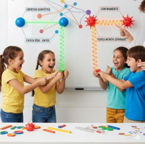
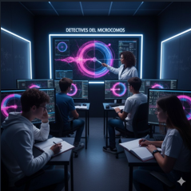

Esta historia ofrece oportunidades pedagógicas excepcionales para transformar cómo enseñamos ciencia:
1. Ciencia como Búsqueda, no como Dogma: Presentar los quarks no como verdades establecidas, sino como soluciones elegantes a problemas genuinos, mostrando la ciencia como una actividad viva y creativa.
2. Desmitificación del Genio Solitario: Mostrar tanto las contribuciones individuales (Gell-Mann, Zweig) como el carácter colectivo y colaborativo de la empresa científica moderna.
3. Conexión Interdisciplinaria: Ilustrar cómo las humanidades (la literatura de Joyce inspirando el nombre "quark") y las matemáticas (teoría de grupos) son esenciales para el progreso científico.
• "Ordena el Zoo de Partículas": Dar a estudiantes tarjetas con propiedades de hadrones (carga, espín, extrañeza) y desafiarles a encontrar patrones, replicando el proceso de clasificación que llevó al Camino Óctuple.
• "El Muro del Confinamiento": Usar imanes o resortes para simular cómo la fuerza entre quarks cambia con la distancia, haciendo tangible un concepto abstracto.
• "Detectives del Microcosmos": Analizar trazas reales de colisiones del LHC (datos disponibles públicamente) para identificar partículas, desarrollando habilidades de razonamiento científico.
Al entender cómo se construye el conocimiento científico genuino, los estudiantes desarrollan:
• Pensamiento Crítico para evaluar afirmaciones pseudocientíficas
• Aprecio por la Investigación Básica como motor de innovación
• Comprensión de la Naturaleza Tentativa pero progresiva del conocimiento científico